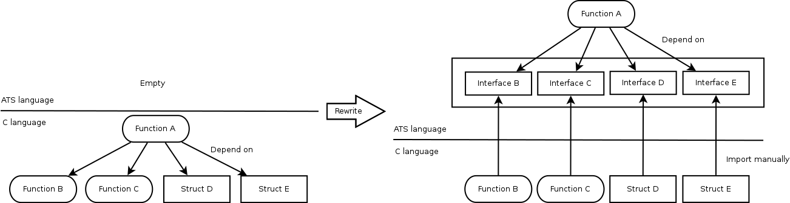

Today, we are choosing the Bohai iteration which means rewriting NetBSD kernel using ATS language. On the iteration, we should choose some C language function and rewrite it little by little. But in many cases, the function depends on many C language interfaces, which are needed to be imported into ATS code.

After some trying, I have felt that such import may cause mistake to assign signature to ATS function. Such mistake easily occurs undefined behavior.
How about generating ATS code importing such C language interface? The C interface already has static types, which are weaker than ATS’s. Converting strong types into weak ones is hard. But I expect that the other way around is some easy.
The c2ats is an utility to generate ATS’s sats file importing from C language header, semi-automatically. The sats file includes many declarations from C language as following:
$ vi example.h
#include <stdio.h>
$ c2ats gen example.h > example.sats
$ cat example.sats
--snip--
viewdef ptr_v_1 (a:t@ype, l:addr) = a @ l
--snip--
abst@ype struct_c2ats__IO_FILE // FIXME! Forward declaration.
typedef type_c2ats_FILE = struct_c2ats__IO_FILE
--snip--
fun fun_c2ats_fread: {l1:addr} (!ptr_v_1(type_c2ats_FILE, l1) | ptr, type_c2ats_size_t, type_c2ats_size_t, ptr l1) -> type_c2ats_size_t = "mac#fread"
--snip--
typedef struct_c2ats__IO_FILE = $extype_struct"struct _IO_FILE" of {
_flags = int,
_IO_read_ptr = ptr (* cPtr0(char) *),
_IO_read_end = ptr (* cPtr0(char) *),
_IO_read_base = ptr (* cPtr0(char) *),
--snip--
typedef type_c2ats__IO_FILE = struct_c2ats__IO_FILE
--snip--The example.h includes stdio.h. The c2ats takes a C language header and generates sats file into stdout. On above example, the sats file has fread(3) interface named fun_c2ats_fread, and the interface has a linear type (at-view) ptr_v_1(type_c2ats_FILE, l1) to prove that ptr l1 points type_c2ats_FILE. The type_c2ats_FILE is an alias of struct_c2ats__IO_FILE which is imported from C language struct _IO_FILE.
First, you need following:
Then try to install the c2ats:
$ cabal install c2ats
$ which c2ats
/home/YourName/.cabal/bin/c2atsNow we can use the c2ats utility.
Let’s try some code using fread(3). You need to call the c2ats to import C language interface as following, because the fread(3) is defined at stdio.h:
$ vi example.h
#include <stdio.h>
$ c2ats gen example.h > example.sats
$ wc -l example.sats
318 example.satsThe example.sats has all of declarations in stdio.h and also the headers depended.
You may write following code using imported interface from stdio.h:
(* File: main.dats *)
#include "share/atspre_define.hats"
#include "share/atspre_staload.hats"
staload UN = "prelude/SATS/unsafe.sats"
staload "example.sats"
fun my_fopen (file: string, mode: string):
[l:addr] (ptr_v_1(type_c2ats_FILE, l) | ptr l) = ret where {
val pn = string2ptr file
val (pfnat, fpfnat | pn) = $UN.ptr_vtake pn
val pm = string2ptr mode
val (pfmat, fpfmat | pm) = $UN.ptr_vtake pm
val (pffp | fp) = fun_c2ats_fopen (pfnat, pfmat | pn, pm)
prval () = fpfnat pfnat
prval () = fpfmat pfmat
val ret = (pffp | fp)
}
fun my_fread {l:addr}{n:int | n > 0}
(pffp: !type_c2ats_FILE @ l | fp: ptr l, len: size_t (n)): (size_t, strptr) = ret where {
implement{} string_tabulate$fopr (s) = '_'
val buf = strnptr2strptr (string_tabulate len)
val pbuf = strptr2ptr buf
val r = fun_c2ats_fread (pffp | pbuf, 1UL, $UN.cast2ulint len, fp)
val r = $UN.cast2size r
val pbufr = add_ptr_bsz (pbuf, r)
val () = if r < len then $UN.ptr0_set<char>(pbufr, '\0')
val ret = (r, buf)
}
fun my_fclose {l:addr} (pffp: type_c2ats_FILE @ l | fp: ptr l): int = ret where {
val ret = fun_c2ats_fclose (pffp | fp)
val fp = __cast (pffp | fp) where {
extern castfn __cast: {l1:addr} (ptr_v_1(type_c2ats_FILE, l1) | ptr l1) -> ()
}
}
fun readshow {l:addr} (pffp: !type_c2ats_FILE @ l | fp: ptr l): void = {
val (r, str) = my_fread (pffp | fp, i2sz(128))
val () = print str
val () = free str
val () = if r > 0 then readshow (pffp | fp)
}
implement main0 () = {
val (pffp | fp) = my_fopen ("main.dats", "r")
val () = readshow (pffp | fp)
val r = my_fclose (pffp | fp)
}Above code is using imported interfaces, fun_c2ats_fopen, fun_c2ats_fread and fun_c2ats_fclose. And the code is work:
$ patscc main.dats -DATS_MEMALLOC_LIBC
$ ./a.out | head
#include "share/atspre_define.hats"
#include "share/atspre_staload.hats"
staload UN = "prelude/SATS/unsafe.sats"
staload "example.sats"
fun my_fopen (file: string, mode: string):
[l:addr] (ptr_v_1(type_c2ats_FILE, l) | ptr l) = ret where {
val pn = string2ptr fileHowever, above code is so messy. Because imported interface has bad signatures. If modify sats files as following:
(* example.sats *)
(* --snip-- *)
fun fun_c2ats_fclose: {l1:addr} (ptr_v_1(type_c2ats_FILE, l1) | ptr l1) -> int = "mac#fclose"
(* --snip-- *)
fun fun_c2ats_fopen: (string, string) -> [l1:addr] (ptr_v_1(type_c2ats_FILE, l1) | ptr l1) = "mac#fopen"
(* --snip-- *)
fun fun_c2ats_fread: {l1:addr} (!ptr_v_1(type_c2ats_FILE, l1) | ptr, size_t, size_t, ptr l1) -> size_t = "mac#fread"
(* --snip-- *)you can get better dats code as following:
(* main.dats *)
#include "share/atspre_define.hats"
#include "share/atspre_staload.hats"
staload UN = "prelude/SATS/unsafe.sats"
staload "example.sats"
fun my_fread {l:addr}{n:int | n > 0}
(pffp: !type_c2ats_FILE @ l | fp: ptr l, len: size_t (n)): (size_t, strptr) = ret where {
implement{} string_tabulate$fopr (s) = '_'
val buf = strnptr2strptr (string_tabulate len)
val pbuf = strptr2ptr buf
val r = fun_c2ats_fread (pffp | pbuf, i2sz 1, len, fp)
val pbufr = add_ptr_bsz (pbuf, r)
val () = if r < len then $UN.ptr0_set<char>(pbufr, '\0')
val ret = (r, buf)
}
fun readshow {l:addr} (pffp: !type_c2ats_FILE @ l | fp: ptr l): void = {
val (r, str) = my_fread (pffp | fp, i2sz(128))
val () = print str
val () = free str
val () = if r > 0 then readshow (pffp | fp)
}
implement main0 () = {
val (pffp | fp) = fun_c2ats_fopen ("main.dats", "r")
val () = readshow (pffp | fp)
val r = fun_c2ats_fclose (pffp | fp)
}Totally, the c2ats generates a scaffold (you may be familiar with Ruby on Rails) to build ATS application. Sometimes, it’s useful to create application rapidly. However, such scaffold should be replaced with better signature until shipping our product.
The c2ats is not yet a completed product. We have some plans to use it on Metasepi project.
abst@ype.After all, we’ll start to rewrite some NetBSD kernel driver using ATS language and c2ats.
blog comments powered by